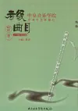

考級2 分鐘
ABRSM 實用考試與演奏考試：先分清評核內容
準備考級之前，先認清自己報的是哪一種：Practical Grades 是實用考試，Performance Grades 是演奏考試。兩者評核安排不同，不能把一份練習清單直接套用到另一種考試。選擇應配
先確認考試要求，再把曲目、技巧與完整演奏逐步準備好。
ABRSM 實用考試與演奏考試有不同評核安排。曲目組合、先修資格和錄影要求，需要按所選樂器、級別及適用大綱核對。
竹笛等其他考級制度另有自己的要求，不宜把長笛考試的規則直接套用。

考級2 分鐘
準備考級之前，先認清自己報的是哪一種：Practical Grades 是實用考試，Performance Grades 是演奏考試。兩者評核安排不同，不能把一份練習清單直接套用到另一種考試。選擇應配
考級2 分鐘
錄影考試不只是把平日練習按下錄影。畫面、聲音、提交流程與曲目安排，都需要按考試機構的要求準備。正式錄製前先做一次完整試錄，能提早發現演奏以外的問題，減少當天反覆重來。
考級2 分鐘
模擬考完成，最容易記住那個明顯錯音，其他表現反而模糊。回看時可以先把問題分成兩類：偶然出現的小失誤，以及在練習和模擬中反覆發生的模式。兩者都值得留意，但準備時間不一定平均分配。
以下整理自舊站，所述報名日期及考試日期屬 2019 年簡章。報考前請到香港考試及評核局查閱最新公布。

中央音樂學院是國內唯一的重點高校，屬國家「211 工程」建設的藝術院校。中央音樂學院與香港考試及評核局（考評局）自 2003 年起，在香港合作舉辦中樂演奏水平等級考試，為學習中樂演奏的香港學生與居民提供優良的學習服務和演奏水平被正確評估的機會。
申請人必須年滿 18 歲；18 歲以下考生須經家長／監護人、老師或學校／樂室報名，18 歲或以上考生可自行報名。報考各樂器的考生沒有年齡及專業數目限制，但每年考試中不能在相同專業內重複報考同一級別。
報考各樂器七至九級者，必須具有於香港考獲的北京中央音樂學院一級樂理考試證書；報考演奏級者，必須具有於香港考獲的九級樂器考試（與報考演奏級為同一樂器）及二級樂理考試證書。
演奏部分一律使用中央音樂學院考級委員會編訂的《海外版》教材，考試內容為該級曲目中自選練習曲一首、樂曲兩首。一至六級另設口試：文字題口答、簡譜視唱、節奏讀譜或視擊（拍出節奏）。
一至九級各樂器考試中，18 歲以下考生應考時必須背譜演奏；18 歲或以上考生可看譜。所有考生應考時必須帶備《海外版》正本教材進入考場，否則成績或會受影響。
考生應考笛子須自備樂器。考官可幫助一至四級考生調弦，樂器考試不用伴奏。因考試時間不足以演奏整首樂曲，考官會在能予評分的情況下中斷演奏。
考試時間一般為星期一至星期六上午 9 時至中午 12 時或下午 2 時至 5 時，日期及時間由電腦分配，以准考證為準。2019 年網上報名日期為 3 月 1 日上午 8 時 30 分至 3 月 21 日下午 5 時 30 分。
可以提供考試機構、樂器與級別、目前曲目，以及希望報考的時間，先討論需要準備的工作。